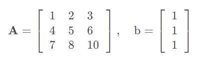
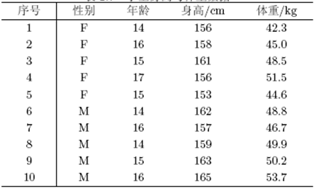
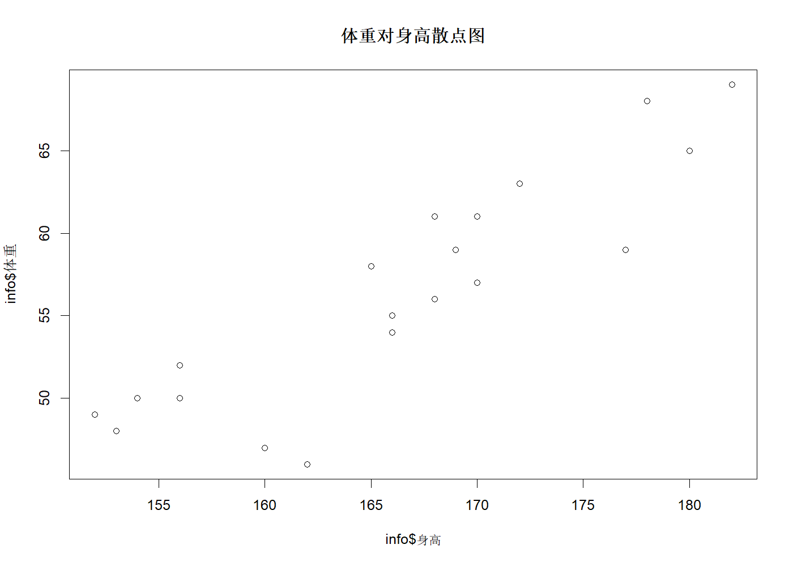
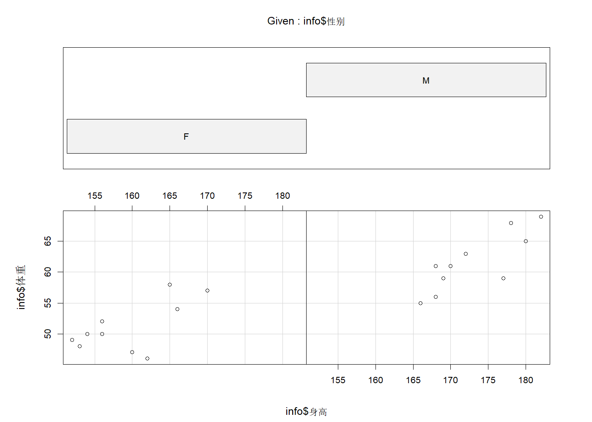
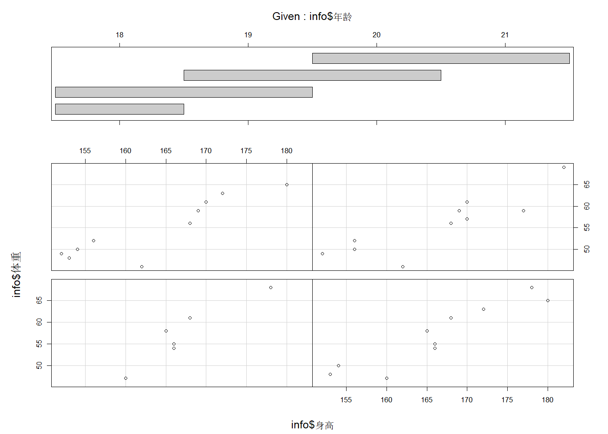
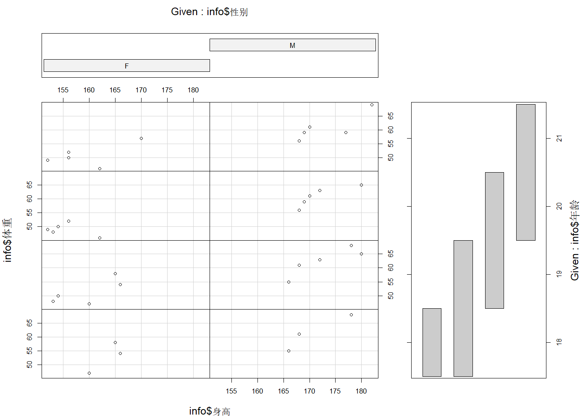
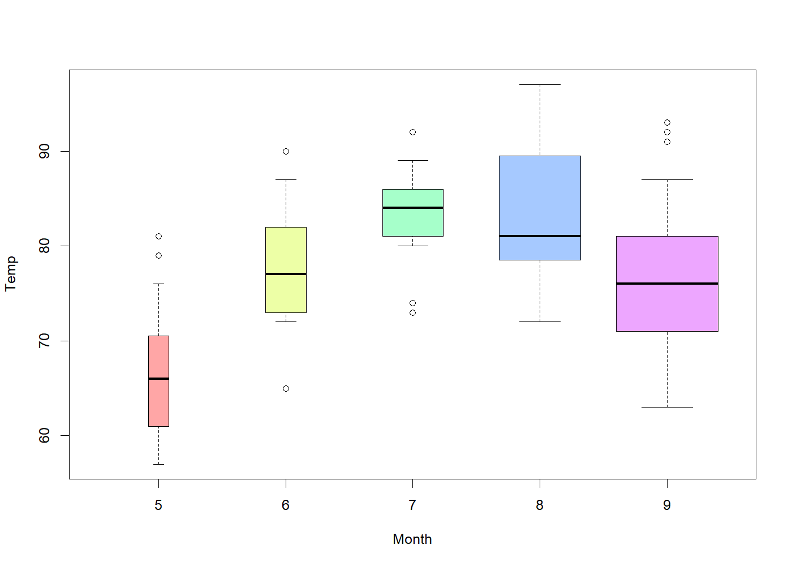

> 本文件由 `大数据实验1.pptx` 整理而成；
> 课件本身（.pptx）未收录进本仓库；文中的图片是幻灯片里原有的公式与数据表。
x <- rep(c(3, 2, 1), times = c(3, 4, 5)) A <-matrix(1:16,4) B <-matrix(1:16,4,byrow = T) C = A+B D = A *B E = A%*%B E = A[-3,]%*%B[,-3]

A = matrix(c(1,2,3,4,5,6,7,8,10),ncol = 3,byrow = T) b = matrix(c(1,1,1),ncol = 1) solve(A)%*%b
[,1] [1,] -1.000000e+00 [2,] 1.000000e+00 [3,] 4.440892e-16

info = data.frame('序号' = 1:10,
'性别' = c(rep('F',5),rep('M',5)),
'年龄' = c(14,16,15,17,15,14,16,14,15,16),
'身高cm' = c(156,158,161,156,153,162,157,159,163,165),
'体重kg' = c(42.3,45.0,48.5,51.5,44.6,48.8,46.7,49.9,50.2,53.7)
)
print(info)
write.table(info,file = 'info.text')
read.table('info.text')
write.csv(info,file = 'info.csv')
read.csv('info.csv')
序号 性别 年龄 身高cm 体重kg
1 1 F 14 156 42.3
2 2 F 16 158 45.0
3 3 F 15 161 48.5
4 4 F 17 156 51.5
5 5 F 15 153 44.6
6 6 M 14 162 48.8
7 7 M 16 157 46.7
8 8 M 14 159 49.9
9 9 M 15 163 50.2
10 10 M 16 165 53.7
序号 性别 年龄 身高cm 体重kg
1 1 F 14 156 42.3
2 2 F 16 158 45.0
3 3 F 15 161 48.5
4 4 F 17 156 51.5
5 5 F 15 153 44.6
6 6 M 14 162 48.8
7 7 M 16 157 46.7
8 8 M 14 159 49.9
9 9 M 15 163 50.2
10 10 M 16 165 53.7
X 序号 性别 年龄 身高cm 体重kg
1 1 1 F 14 156 42.3
2 2 2 F 16 158 45.0
3 3 3 F 15 161 48.5
4 4 4 F 17 156 51.5
5 5 5 F 15 153 44.6
6 6 6 M 14 162 48.8
7 7 7 M 16 157 46.7
8 8 8 M 14 159 49.9
9 9 9 M 15 163 50.2
10 10 10 M 16 165 53.7
info = read.csv('wh.csv',header = T, fileEncoding = 'UTF-8') #（1）读入数据
print(info) #（2）显示数据
#(3） 体重对身高散点图
plot(info$体重~info$身高,main = '体重对身高散点图')
# 绘制不同性别下, 体重对身高的散点图
coplot(info$体重~info$身高|info$性别)
# （4）绘制不同年龄阶段, 体重对身高的散点图
coplot(info$体重~info$身高|info$年龄)
# (5)绘制不同性别和不同年龄阶段, 体重对身高的散点图
coplot(info$体重~info$身高|info$性别+info$年龄)
X 序号 性别 年龄 身高 体重 1 1 1 F 18 166 54 2 2 2 F 18 165 58 3 3 3 F 19 154 50 4 4 4 F 18 160 47 5 5 5 F 20 162 46 6 6 6 F 19 153 48 7 7 7 F 21 156 50 8 8 8 F 20 152 49 9 9 9 F 21 170 57 10 10 10 F 20 156 52 11 11 11 M 18 168 61 12 12 12 M 18 166 55 13 13 13 M 19 172 63 14 14 14 M 18 178 68 15 15 15 M 20 169 59 16 16 16 M 19 180 65 17 17 17 M 21 177 59 18 18 18 M 20 168 56 19 19 19 M 21 182 69 20 20 20 M 20 170 61




data(airquality)
aq = na.omit(airquality)
boxplot(Temp~Month,
data = aq,
width = c(1:5),
col = rainbow(5,s = 0.5,alpha = 0.7),
range =0.8,
staplelwd = 0.8,
cex.main = 1.5)
